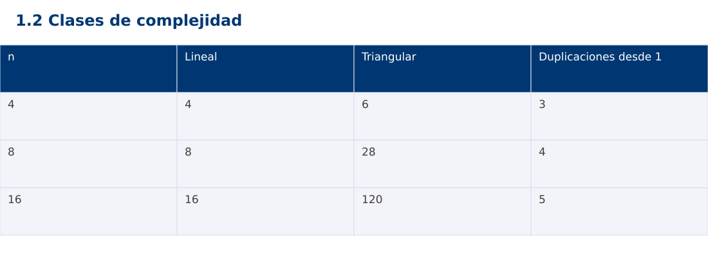

Estructura de Datos
1.2 Clases de complejidad · Python
Ing. Pablo Torres, Mgtr. · Universidad Politécnica Salesiana · Computación · Cuenca
Unidad 1: Teoría de la Complejidad
Índice del curso · Presentación Java · Evaluación Moodle
1. Conceptos y ejemplos
Prerrequisitos: variables, condiciones, bucles, funciones y arreglos. El contenido desarrolla los conceptos adicionales que utiliza.
1.1 Crecimientos habituales
Los órdenes Θ(1), Θ(log n), Θ(n), Θ(n log n), Θ(n²) y Θ(2ⁿ) describen familias de crecimiento. Acceder a una posición conocida de un arreglo es constante en el modelo adoptado. Reducir repetidamente a la mitad un intervalo produce crecimiento logarítmico. Recorrer todas las posiciones produce crecimiento lineal. La clase describe el comportamiento asintótico, no garantiza que una implementación gane para cualquier tamaño pequeño.
1.2 Duplicar la entrada
Al duplicar n, un trabajo lineal se multiplica aproximadamente por dos y uno cuadrático por cuatro. Para log₂(n), duplicar n añade una unidad. En un algoritmo exponencial, pasar de n a n+1 puede duplicar el trabajo. Por eso un ejemplo exponencial debe ejecutarse con límites pequeños. No ejecutes entradas desmesuradas para confirmar una tendencia que ya se deduce del conteo.
1.3 Bucles dependientes
En un triángulo de comparaciones, la iteración i visita n-i-1 posiciones. La suma es (n-1)+(n-2)+…+1=n(n-1)/2. El costo es Θ(n²), aunque el número de repeticiones internas disminuya. En un ciclo que duplica k hasta superar n, el número de pasos es ⌊log₂ n⌋+1 para n≥1. Si el bucle externo ejecuta n veces ese ciclo, el costo es Θ(n log n).
1.4 Peor caso, promedio y amortizado
El promedio exige un modelo de distribución de entradas. El análisis amortizado distribuye el costo de una secuencia de operaciones y no presupone entradas aleatorias. Un arreglo dinámico puede realojar n elementos en una expansión, pero muchas inserciones al final tienen costo amortizado constante. No atribuyas ese resultado a cada llamada individual ni a cualquier operación de una colección.
Traza de referencia
| n | Lineal | Triangular | Duplicaciones desde 1 |
|---|---|---|---|
| 4 | 4 | 6 | 3 |
| 8 | 8 | 28 | 4 |
| 16 | 16 | 120 | 5 |
La tabla muestra estados o conteos concretos. Reproduce cada transición y comprueba qué propiedad permanece verdadera. Una traza finita ayuda a encontrar errores; la justificación del algoritmo también exige explicar por qué progresa y por qué la condición final satisface el contrato.

Particularidades de Python
Python usa indentación para delimitar bloques y enteros de precisión arbitraria. // realiza división entera para índices no negativos. list.copy() crea una copia superficial; las listas y diccionarios mutables pueden compartirse mediante referencias. Las funciones de esta demostración reciben los tipos descritos en el contrato. Los assert son comprobaciones de desarrollo y deben ejecutarse sin la opción -O. No se requieren paquetes externos.
2. Demostración guiada
Problema y contrato: n entero no negativo. Cuenta pares de índices i<j. El ejemplo usa tamaños pequeños; no pretende ejecutar entradas gigantes ni medir su tiempo.
- Lee el contrato y predice la salida del caso principal antes de ejecutar.
- Identifica las variables que representan el estado y vincúlalas con la traza de la sección anterior.
- Ejecuta el archivo completo. Las comprobaciones internas detienen el programa si una condición esperada falla.
- Cambia una entrada del bloque de ejecución, predice el resultado y contrástalo. Conserva el núcleo de la demostración como referencia.
Código completo
Este bloque se genera desde ejemplos/demo.py mediante scripts/sync-code.py; ese archivo es la fuente del código. La PC tiene otro objetivo y sus casos de aceptación aparecen en la sección 3.
def pairs(n):
if n < 0:
raise ValueError("n negativo")
count = 0
for i in range(n):
for j in range(i + 1, n):
count += 1
return count
if __name__ == "__main__":
assert pairs(0) == 0
for n in (4, 8, 16):
assert pairs(n) == n * (n - 1) // 2
print(f"{n}:{pairs(n)}")
try:
pairs(-1)
raise AssertionError("Debió rechazar n")
except ValueError:
pass
Ejecución
Desde esta carpeta 01-complexity-analysis/1.2-growth/python:
python3 ejemplos/demo.py
Salida esperada de la demostración
4:6
8:28
16:120
La salida procede de los datos fijos del bloque de ejecución. Las verificaciones internas también cubren los casos adicionales que se leen en el código. El registro de ejecuciones realizadas se conserva en verificación, separado de estas expectativas.
3. PC — 1.2: Clases de complejidad
Construye una tabla para n=4,8,16,32 que cuente operaciones de tres bucles: triangular, reducción por mitades y n repeticiones de reducción por mitades. Entrega las fórmulas y una interpretación de las razones de crecimiento.
Requisitos de la entrega
- Implementa la actividad en una versión, a tu elección entre Java, Python y JavaScript. Las PL se entregan exclusivamente en Java.
- Separa la lógica del procesamiento de la entrada y la impresión. Documenta tipos, dominio válido, salida y comportamiento de error.
- Conserva los casos de aceptación siguientes y agrega al menos un caso que compruebe el invariante del tema.
- No copies como solución el bloque de demostración: resuelve la ampliación pedida. No se suministra una solución completa de esta PC.
Casos de aceptación de la PC
| Entrada o escenario | Resultado exigido |
|---|---|
| n=4, triangular | 6 operaciones |
| n=8, triangular | 28 operaciones |
| n=0 | 0 operaciones en los tres conteos |
Ejecución y evidencia
Desde la carpeta de tu entrega, ejecuta el programa con python3 main.py. Si divides Java en paquetes, utiliza los comandos de la plantilla del estudiante. Registra entrada, resultado esperado, resultado real y explicación de cualquier diferencia en evidencias/PC1.2.md de tu repositorio personal.
Crea commits pequeños: feat(pc1.2): implementar contrato, test(pc1.2): cubrir casos limite y docs(pc1.2): explicar costos. Sustituye los mensajes por descripciones del cambio real. Obtén el hash con git rev-parse HEAD y revisa una etapa con git show HASH. La actividad no necesita continuar un proyecto acumulativo.
Lo esencial
- Los órdenes Θ(1), Θ(log n), Θ(n), Θ(n log n), Θ(n²) y Θ(2ⁿ) describen familias de crecimiento.
- El promedio exige un modelo de distribución de entradas.
- Explica el contrato, traza una entrada y justifica tiempo y memoria con las condiciones descritas.
Referencias
- Programa analítico y referencias del docente: correspondencia en el documento docente de este contenido.
- Referencia técnica de Python.
- Bibliografía y análisis de fuentes.